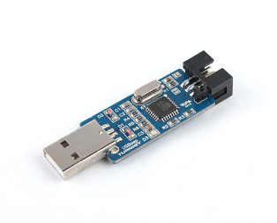

Making Your Own Arduino
A few initial notes:
Ok now that you are armed with a fair amount of knowledge on Arduino and its working, let’s get to the part where you make your own.
Use the schematic given above as a reference.
The essential components for the Arduino are power supply block, power supply connection to micro controller, crystal oscillator circuit and reset pull up. Do not change without proper study.
With the rest, feel free to tweak it as per your application. This will give you a greater control over the PCB, and also make the whole thing smaller.
If you are using a new IC brought directly from the market, first burn the bootloader using a programmer like the USBasp. A port for the USBasp has been provided on the ArduDIY board. You can use this to burn the bootloader and then use the IC elsewhere.
 USBasp Programmer
For programming, you can use the programmer or any USB to Serial Converter like the one provided in this kit. Just make sure the connections are correct.
Step 1:
Identify what all you shall need. Think of your complete application in detail, this includes all the pins, ports and other components.
Now assign proper pins as per their use e.g. (GPIO, UART, PWM).
As a good practise always keep extra pins for future expansion and give multiple ground pins.
Step 2:
Now add the circuits for power supply, crystal oscillator and pull up for reset. For now just add blocks on paper with the relative location as to where you shall be placing them.
Step 3:
Now think of the actual routes or connections. If you are using a software like eagle, go ahead with the board. If you are going to make this on a general purpose PCB (0-PCB) then it is recommended that you think about the routes first on paper.
Step 4:
Start fabrication.
Once you are done with fabrication, it is highly recommended that you perform proper testing as given in this booklet.
Step 5:
To run Arduino you shall need an IC with the Arduino bootloader burnt. Now you can directly buy a IC with the Arduino bootloader pre-programmed or you can burn it yourself.
If you want to avoid the trouble of bootloading the IC yourself, just buy a bootloaded IC from me.
To do this you shall need a dedicated programmer such as the USBasp. The ArduDIY board provides a port to which the USBasp can be directly connected thus removing the need for jumpers.
To use the USBasp you will have to install its drivers. They are available on www.fischl.de/usbasp/
Installing drivers for Windows8 and above is slightly complicated. The complete procedure is given on http://letsmakerobots.com/node/36841. This link is also available on the USBasp driver page at the fischl website. It has been tried and works.
Once you install your drivers, just connect your USBasp to the Arduino and your PC, then use option burn bootloader.

Before burning the bootloader select the board on which you are going to use the ATmega. You can also make ATmega328’s meant for the Arduino Uno by selecting Arduino Uno under Boards before burning bootloader. For IC’s meant for the ArduDIY, just select the same options you use for programming i.e. Arduino Duemilanove and processor ATmega328
The programmer leds will flash and in some time you will get the done burning message. Now your ATmega is an Arduino. You can now remove the IC from your ArduDIY board and use it on any other custom board you have designed.